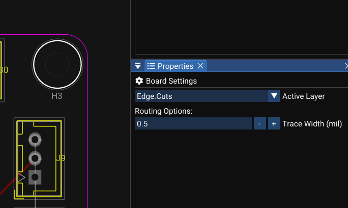

Zones and Copper Planes¶
Copper zones (fills/pours) cover board areas with copper, typically for ground planes or power distribution. Zones are managed by the zone engine.
Basic Concepts¶
A a copper zone includes:
| Property | Description |
|---|---|
id |
Unique zone identifier |
netName |
Assigned net (e.g., GND, VCC) |
layerId |
Copper layer (e.g., F.Cu, B.Cu) |
priority |
Higher-priority zones override lower ones where they overlap |
outline |
User-drawn polygon defining the zone boundary |
cutouts |
Shapes excluded from the fill (circles, rectangles, capsules) |
minClearance |
Minimum clearance from pads and traces |
Computed output¶
After fill computation, each zone contains islands:
| Structure | Description |
|---|---|
| Outer boundary | Outer polygon of the filled copper area |
| Internal holes | Hole polygons inside the island (clearance areas) |
Creating a Zone¶
Manual zone creation¶
- Select a copper layer (e.g., F.Cu) as the active layer.
- Use the Draw Polygon tool to draw a closed polygon.
- Assign zone properties:
- Net name (e.g.,
GND). - Clearance (e.g., 8 mil).
- Priority (default: 0).
- Net name (e.g.,
- WireFrame computes the filled copper islands.
Quick ground plane¶
Use Tools → Fill GND Plane (or equivalent menu action):
- WireFrame infers the board outline from Edge.Cuts geometry.
- Generates a GND zone covering the entire board interior.
- Clearances are computed around all pads and traces.

Zone Fill Computation¶
WireFrame uses the Clipper2 library for polygon boolean operations:
Process¶
- Convert zone outline points to Clipper
Path64with scaling. - Apply boolean subtraction for:
- Clearances around pads and traces of different nets.
- User-defined cutouts.
- Other zones with higher priority.
- Convert results back to zone island structures.
Rendered result¶
- Filled islands are drawn as semi-transparent polygons on the PCB canvas.
- Clearance gaps appear around non-matching pads and traces.
- Same-net pads connect to the zone (with thermal relief, when supported).
Performance
Zone fill computation can be intensive for complex boards with many pads and traces. The fill is rebuilt when you explicitly trigger it or when relevant objects change.
Ground Plane from Board Outline¶
the ground plane fill feature automates ground plane creation:
- Infers board outline geometry from:
- Closed polygons on Edge.Cuts.
- Board boundary settings.
- Creates a GND zone covering the entire board interior.
- Uses the zone engine to compute islands.
From the user's perspective:
- Click "Fill GND Plane" → the board fills with copper.
- All non-GND pads show clearance gaps.
- GND pads have thermal connections (spokes).
Zone Interaction with Nets¶
the PCB netlist engine integrates zones into the connectivity graph:
| Rule | Description |
|---|---|
| Same-net pads | Pads touching a same-net zone are treated as connected |
| Same-net traces | Traces entering the zone area connect to the net |
| Different-net pads | Clearance gap is maintained around the pad |
| Different-net traces | Clearance gap is maintained around the trace |
zone membership testing tests if a location is inside a same-net copper area — useful for routing constraints and DFM checks.
Zone Properties and Editing¶
| Property | Editable | Description |
|---|---|---|
| Net name | Yes | Assign which net the zone belongs to |
| Layer | Yes | Which copper layer the zone fills |
| Priority | Yes | Higher values override lower priority zones |
| Clearance | Yes | Minimum gap from other-net copper |
| Outline | Yes | Drag vertices to reshape the zone boundary |
| Cutouts | Yes | Add shapes to exclude from the fill |
Zone priority
Use priority to create nested zones — for example, a VCC island inside a GND plane. The VCC zone should have a higher priority number than the GND zone.
See Also¶
- Routing — traces interact with zone clearances.
- DFM & DRC — zone connectivity is checked during DRC.
- Layers & Views — zone visibility follows layer settings.